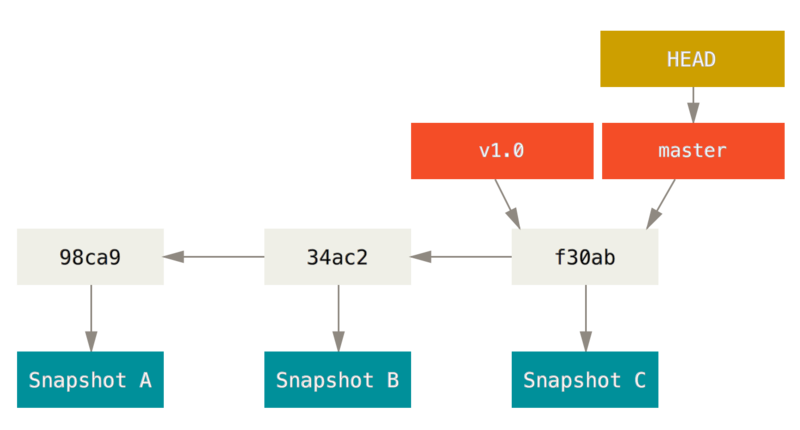
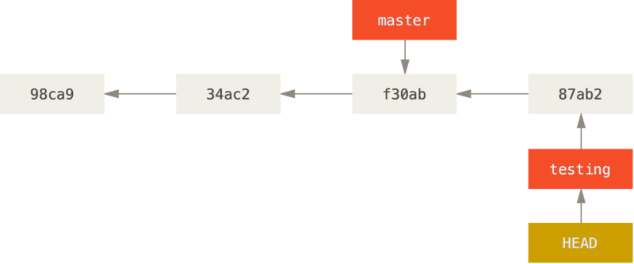
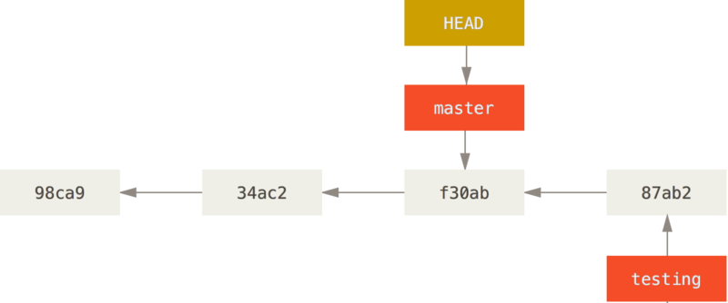

$ git add README test.rb LICENSE
$ git commit -m 'The initial commit of my project'分支简介
为了真正理解 Git 处理分支的方式，我们需要回顾一下 Git 是如何保存数据的。
或许你还记得 [_getting_started] 的内容，Git 保存的不是文件的变化或者差异，而是一系列不同时刻的文件快照。
在进行提交操作时，Git 会保存一个提交对象（commit object）。知道了 Git 保存数据的方式，我们可以很自然的想到——该提交对象会包含一个指向暂存内容快照的指针。 但不仅仅是这样，该提交对象还包含了作者的姓名和邮箱、提交时输入的信息以及指向它的父对象的指针。首次提交产生的提交对象没有父对象，普通提交操作产生的提交对象有一个父对象，而由多个分支合并产生的提交对象有多个父对象，
为了说得更加形象，我们假设现在有一个工作目录，里面包含了三个将要被暂存和提交的文件。 暂存操作会为每一个文件计算校验和（使用我们在 [_getting_started] 中提到的 SHA-1 哈希算法），然后会把当前版本的文件快照保存到 Git 仓库中（Git 使用 blob 对象来保存它们），最终将校验和加入到暂存区域等待提交：
当使用 git commit 进行提交操作时，Git 会先计算每一个子目录（本例中只有项目根目录）的校验和，然后在 Git 仓库中这些校验和保存为树对象。
随后，Git 便会创建一个提交对象，它除了包含上面提到的那些信息外，还包含指向这个树对象（项目根目录）的指针。如此一来，Git 就可以在需要的时候重现此次保存的快照。
现在，Git 仓库中有五个对象：三个 blob 对象（保存着文件快照）、一个树对象（记录着目录结构和 blob 对象索引）以及一个提交对象（包含着指向前述树对象的指针和所有提交信息）。

Figure 1. 首次提交对象及其树结构
做些修改后再次提交，那么这次产生的提交对象会包含一个指向上次提交对象（父对象）的指针。

Figure 2. 提交对象及其父对象
Git 的分支，其实本质上仅仅是指向提交对象的可变指针。
Git 的默认分支名字是 master。
在多次提交操作之后，你其实已经有一个指向最后那个提交对象的 master 分支。
它会在每次的提交操作中自动向前移动。
|
Note
|
Git 的 |

Figure 3. 分支及其提交历史
分支创建
Git 是怎么创建新分支的呢？
很简单，它只是为你创建了一个可以移动的新的指针。
比如，创建一个 testing 分支，
你需要使用 git branch 命令：
$ git branch testing这会在当前所在的提交对象上创建一个指针。

Figure 4. 两个指向相同提交历史的分支
那么，Git 又是怎么知道当前在哪一个分支上呢？
也很简单，它有一个名为 HEAD 的特殊指针。
请注意它和许多其它版本控制系统（如 Subversion 或 CVS）里的 HEAD 概念完全不同。
在 Git 中，它是一个指针，指向当前所在的本地分支（译注：将 HEAD 想象为当前分支的别名）。
在本例中，你仍然在 master 分支上。
因为 git branch 命令仅仅 创建 一个新分支，并不会自动切换到新分支中去。

Figure 5. HEAD 指向当前所在的分支
你可以简单地使用 git log 命令查看各个分支当前所指的对象。
提供这一功能的参数是 --decorate。
$ git log --oneline --decorate
f30ab (HEAD, master, testing) add feature #32 - ability to add new
34ac2 fixed bug #1328 - stack overflow under certain conditions
98ca9 initial commit of my project正如你所见，当前 master'' 和 testing'' 分支均指向校验和以 f30ab 开头的提交对象。
分支切换
要切换到一个已存在的分支，你需要使用 git checkout 命令。
我们现在切换到新创建的 testing 分支去：
$ git checkout testing这样 HEAD 就指向 testing 分支了。

Figure 6. HEAD 指向当前所在的分支
那么，这样的实现方式会给我们带来什么好处呢？ 现在不妨再提交一次：
$ vim test.rb
$ git commit -a -m 'made a change'

Figure 7. HEAD 分支随着提交操作自动向前移动
如图所示，你的 testing 分支向前移动了，但是 master 分支却没有，它仍然指向运行 git checkout 时所指的对象。
这就有意思了，现在我们切换回 master 分支看看：
$ git checkout master

Figure 8. 检出时 HEAD 随之移动
这条命令做了两件事。
一是使 HEAD 指回 master 分支，二是将工作目录恢复成 master 分支所指向的快照内容。
也就是说，你现在做修改的话，项目将始于一个较旧的版本。
本质上来讲，这就是忽略 testing 分支所做的修改，以便于向另一个方向进行开发。
|
Note
|
分支切换会改变你工作目录中的文件
在切换分支时，一定要注意你工作目录里的文件会被改变。 如果是切换到一个较旧的分支，你的工作目录会恢复到该分支最后一次提交时的样子。 如果 Git 不能干净利落地完成这个任务，它将禁止切换分支。 |
我们不妨再稍微做些修改并提交：
$ vim test.rb
$ git commit -a -m 'made other changes'现在，这个项目的提交历史已经产生了分叉（参见 项目分叉历史）。
因为刚才你创建了一个新分支，并切换过去进行了一些工作，随后又切换回 master 分支进行了另外一些工作。
上述两次改动针对的是不同分支：你可以在不同分支间不断地来回切换和工作，并在时机成熟时将它们合并起来。
而所有这些工作，你需要的命令只有 branch、checkout 和 commit。

Figure 9. 项目分叉历史
你可以简单地使用 git log 命令查看分叉历史。
运行 git log --oneline --decorate --graph --all ，它会输出你的提交历史、各个分支的指向以及项目的分支分叉情况。
$ git log --oneline --decorate --graph --all
* c2b9e (HEAD, master) made other changes
| * 87ab2 (testing) made a change
|/
* f30ab add feature #32 - ability to add new formats to the
* 34ac2 fixed bug #1328 - stack overflow under certain conditions
* 98ca9 initial commit of my project由于 Git 的分支实质上仅是包含所指对象校验和（长度为 40 的 SHA-1 值字符串）的文件，所以它的创建和销毁都异常高效。 创建一个新分支就像是往一个文件中写入 41 个字节（40 个字符和 1 个换行符），如此的简单能不快吗？
这与过去大多数版本控制系统形成了鲜明的对比，它们在创建分支时，将所有的项目文件都复制一遍，并保存到一个特定的目录。 完成这样繁琐的过程通常需要好几秒钟，有时甚至需要好几分钟。所需时间的长短，完全取决于项目的规模。而在 Git 中，任何规模的项目都能在瞬间创建新分支。 同时，由于每次提交都会记录父对象，所以寻找恰当的合并基础（译注：即共同祖先）也是同样的简单和高效。 这些高效的特性使得 Git 鼓励开发人员频繁地创建和使用分支。
接下来，让我们看看为什么你应该这么做？